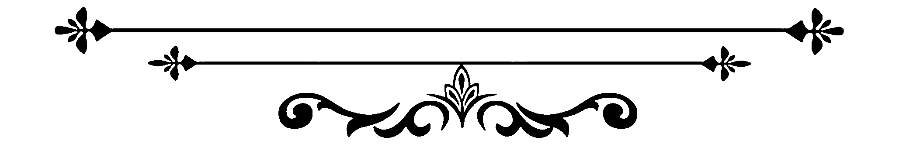
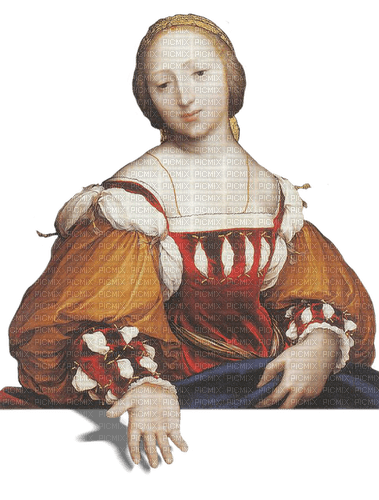

La Renaissance a été une période de renouveau culturel et artistique en Europe, caractérisée par un regain d'intérêt pour les idées et les valeurs de l'Antiquité classique. L'art de la Renaissance a été marqué par une profonde exploration de la perspective, de la lumière et de l'anatomie humaine, ainsi que par un intérêt renouvelé pour les thèmes religieux et mythologiques.

La Renaissance a vu émerger de nombreux artistes talentueux qui ont laissé une empreinte indélébile sur l'histoire de l'art.
Parmi les plus célèbres figurent Leonardo da Vinci, Michel-Ange, Raphaël, Botticelli et Titien.

Les œuvres de la Renaissance sont parmi les plus célèbres et les plus influentes de l'histoire
de l'art occidental.
Parmi les exemples les plus emblématiques:
LA CéNE
Les archives
de Santa Maria delle
Grazie ont été détruites
en 1778, effaçant ainsi la trace du contrat pour la Cène, mais le duc de
Milan, Ludovic Sforza, en est incontestablement le commanditaire. Léonard de Vinci entame le travail vers 1494 ou 1495, tandis qu'il sculpte encore le Cavallo. Malgré sa lenteur critiquée, la fresque est achevée en 1498. Cependant, dès le XVIe siècle, elle subit des dégradations, aggravées par l'occupation française en 1796, altérant ainsi cette œuvre emblématique.
LA MORT DE MARAT
Les archives
de Santa Maria delle
Grazie ont été détruites
en 1778, effaçant ainsi la trace du contrat pour la Cène, mais le duc de
Milan, Ludovic Sforza, en est incontestablement le commanditaire. Léonard de Vinci entame le travail vers 1494 ou 1495, tandis qu'il sculpte encore le Cavallo. Malgré sa lenteur critiquée, la fresque est achevée en 1498. Cependant, dès le XVIe siècle, elle subit des dégradations, aggravées par l'occupation française en 1796, altérant ainsi cette œuvre emblématique.
LA FILLE à LA PERLE
Les archives
de Santa Maria delle
Grazie ont été détruites
en 1778, effaçant ainsi la trace du contrat pour la Cène, mais le duc de
Milan, Ludovic Sforza, en est incontestablement le commanditaire. Léonard de Vinci entame le travail vers 1494 ou 1495, tandis qu'il sculpte encore le Cavallo. Malgré sa lenteur critiquée, la fresque est achevée en 1498. Cependant, dès le XVIe siècle, elle subit des dégradations, aggravées par l'occupation française en 1796, altérant ainsi cette œuvre emblématique.